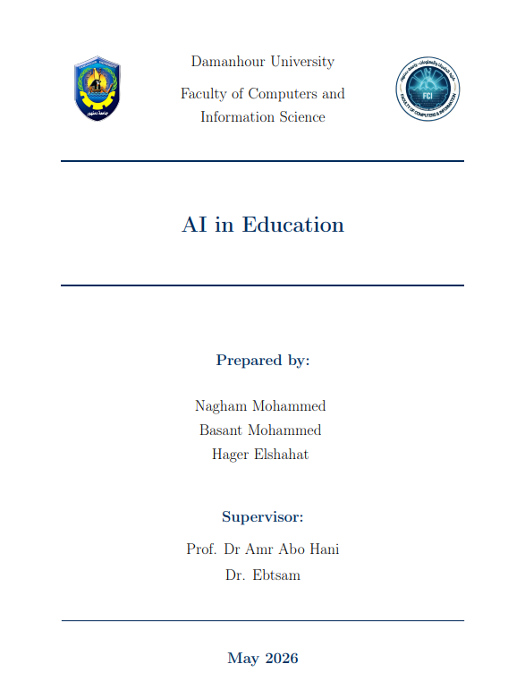
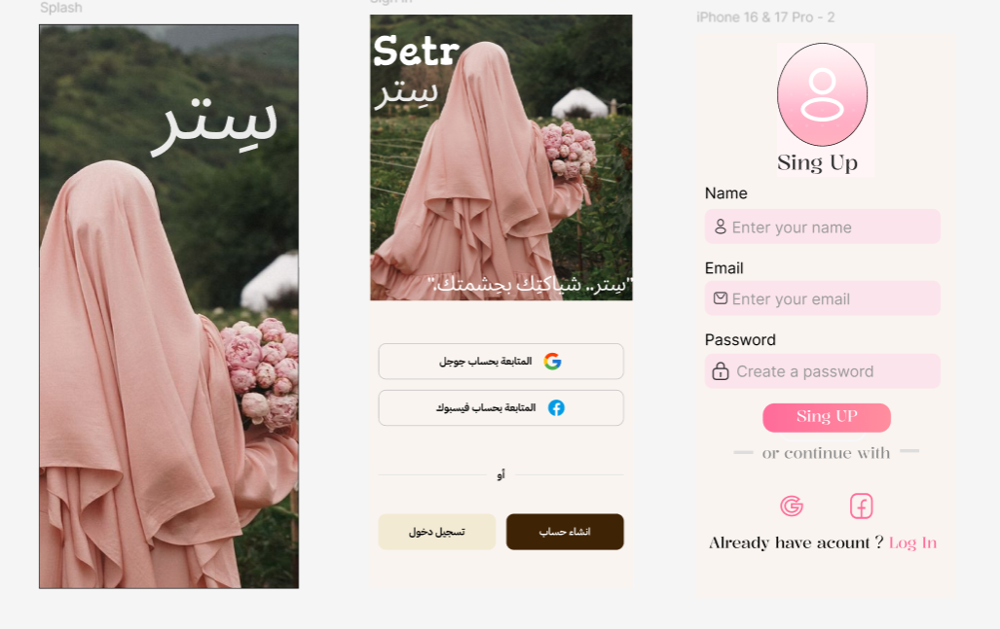

Selected work.
Five projects across front-end development, UI/UX design, data analysis, and academic research.
Beheira Tourism Web App
A fully responsive web application showcasing cultural and historical landmarks of the Beheira Governorate with intuitive navigation and modern layouts.

AI in Education — Literature Review
A systematic research study analyzing 20 papers on AI applications in higher education, structured and formatted professionally using LaTeX.
View Full PDF.jpg)
Responsive Admin Dashboard
An interactive web dashboard for monitoring key performance metrics, product management, user analytics, and revenue tracking across devices.
Uber Stock Financial Dashboard
An interactive financial analytics dashboard analyzing 2019–2025 stock performance data using Python, Pandas, Matplotlib, and Seaborn.
View Source File
Setr - Modest Fashion App
Currently designing screen flows, user research, and wireframes for a modesty-focused fashion app aimed at delivering a personalized shopping experience.